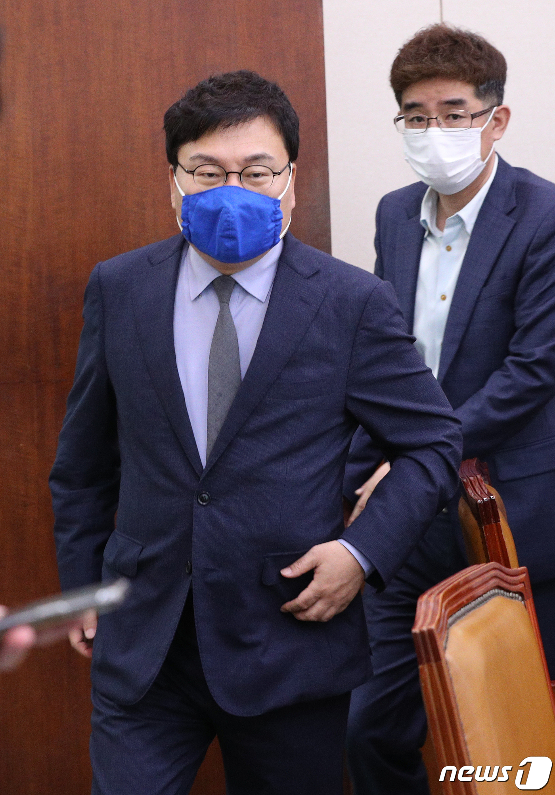
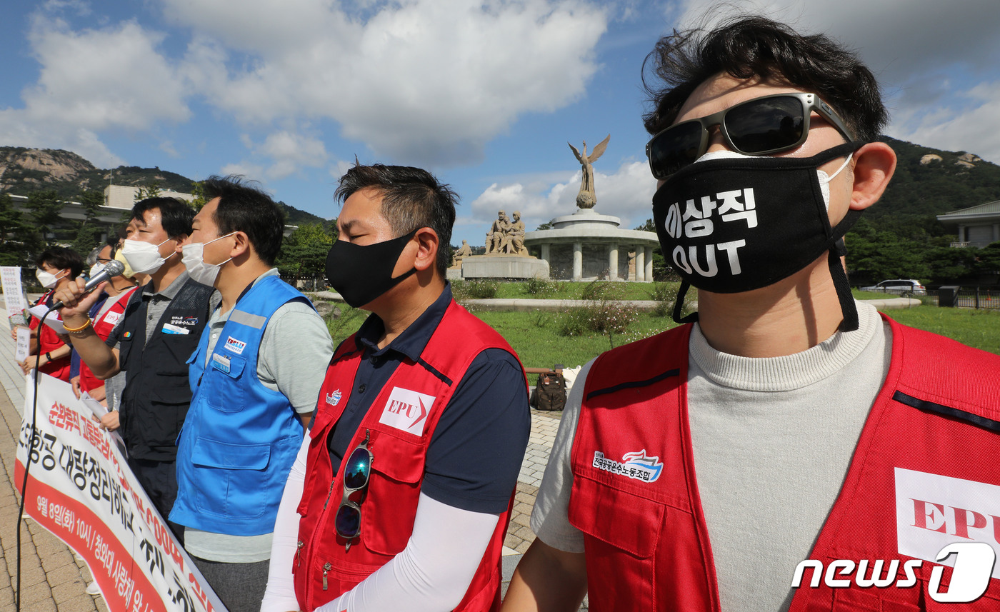

"재산공개 상, 169억 이스타 주식 이미 내놓겠다고 발표한 바 있다"
신동근 "정부·여당의 적극적인 대처가 필요하다" 지도부 첫 언급이상직 더불어민주당 의원이 30일 오전 서울 여의도 국회에서 열린 문화체육관광위원회 전체회의에 참석하고 있다. 2020.7.30/뉴스1 © News1 신웅수 기자
(서울=뉴스1) 정윤미 기자 = 최근 '이스타항공 사태'로 논란의 중심에 선 이스타항공 창업주 이상직 더불어민주당 의원은 11일 21대 국회 공직자 재산신고 내역과 관련한 각종 의혹에 대한 입장을 밝혔다.
이 의원은 이날 오후 입장문을 통해 "21대 국회의원에 취임하면서 한 공직자재산신고 내역과 관련해 최소한의 사실확인조차 거치지 않은 악의적 오보가 계속되고 있다"고 말했다.
이 의원은 "이번 공직자 재산신고 과정에서 제 딸이 신고한 1년간 생활비 지출내역은 4천만원"이라면서 "유수 여러 언론이 이 숫자에 '0' 하나를 덧붙여 놓아 연간 4억원을 생활비로 펑펑 쓰면서도 이스타항공 직원들의 어려움을 외면하고 있는 부도덕한 사람으로 몰아갔다"고 호소했다.
그러면서 "이번에 신고된 재산내역 총 212억6700만원 중 168억5000만원은 이스타홀딩스가 보유하고 있는, 비상장 상태인 이스타항공 주식의 평가가치 금액"이라면서 "이 주식은 이미 지난 6월 제주항공과의 인수합병 과정에서 이스타항공 정상화를 위해 내 놓겠다고 발표한 바 있다"고 해명했다.
국회공직자윤리위원회가 지난달 28일 공개한 '21대 신규등록 국회의원 175명의 재산 공개 내역'에서 이 의원의 재산은 212억6700만원으로 민주당 1위를 기록했다.
이 의원은 '자녀가 보유한 이스타홀딩스 주식가치가 3000만원에서 168억여원으로 1년새 급증했다'는 지적에 대해 "비상장주식의 가치 산정 근거가 되는 공직자윤리법 규정이 금년 6월4일부터 '액면가' 기준에서 '평가액' 기준으로 변경돼 이를 그대로 따랐기 때문이지, 다른 이유가 있는 것은 아니다"라고 해명했다.
이어 "나머지 재산은 회사원으로 직장생활을 하던 20여 년 전 내 집 장만 차원에서 마련해서 지금까지 거주해온 32평 아파트가 사실상 전부"라며 "이마저도 부과된 세금을 성실히 납부하기 위해 담보로 제공한 상태"라고 밝혔다.
그러면서 "창업자로서 어려움에 빠진 이스타항공을 돕기 위해 많은 노력을 기울여왔다"면서 "다만 국민 눈높이에서는 현직 국회의원의 부적절한 처신으로 비춰질 수 있다는 점 때문에 조심스러웠던 것도 사실"이라고 소회를 밝혔다.
민주노총 공공운수노조 및 시민단체 회원들이 8일 오전 서울 종로구 청와대 분수대 앞에서 이스타항공 대량정리해고 사태 해결 촉구 기자회견을 갖고 있다. 이들은 사측의 대량 정리해고 철회, 창업주 이상직 더불어민주당 의원의 사재출연 등을 촉구했다. 2020. 9. 8/뉴스1 © News1 임세영 기자
신종 코로나바이러스 감염증(코로나19) 사태로 도산 위기에 처한 이스타항공은 제주항공의 인수가 무산되면서 지난 7일 직원 600여명을 정리해고했다.
신동근 최고위원은 여당 지도부 처음으로 이와 관련해 이날 오전 국회에서 열린 민주당 최고위원회의에서 "정부·여당의 적극적인 대처가 필요하다"며 "특히나 우리당 국회의원이 이스타 창업주였던 만큼 더 책임 있는 자세로 이 사태에 대처할 필요가 있다"고 강조했다.
이어 "이스타항공은 250억 임금을 체불 중이고 더구나 고용보험료 5억 체납으로 고용유지 지원금조차 받지 못하는 사실이 가슴을 아프게 한다"면서 "대량해고 사태만은 막겠다는 의지가 있다면 모두를 100% 만족시키지 못하더라도 어느 정도 합리적인 해결책을 찾을 수 있을 것이라 생각한다"고 말했다.
younme@news1.kr
▶ 네이버 메인에서 [뉴스1] 구독하기!
▶ 뉴스1 바로가기 ▶ 코로나19 뉴스
© 뉴스1코리아(news1.kr), 무단 전재 및 재배포 금지